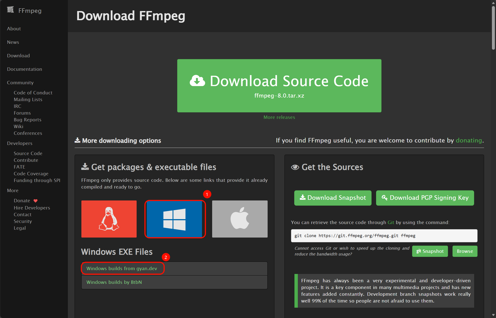
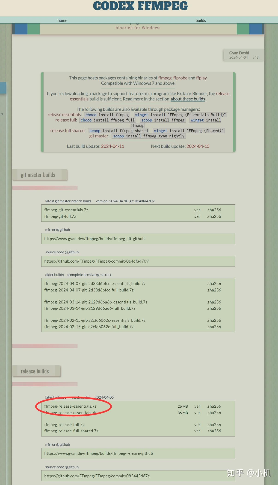
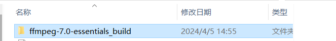
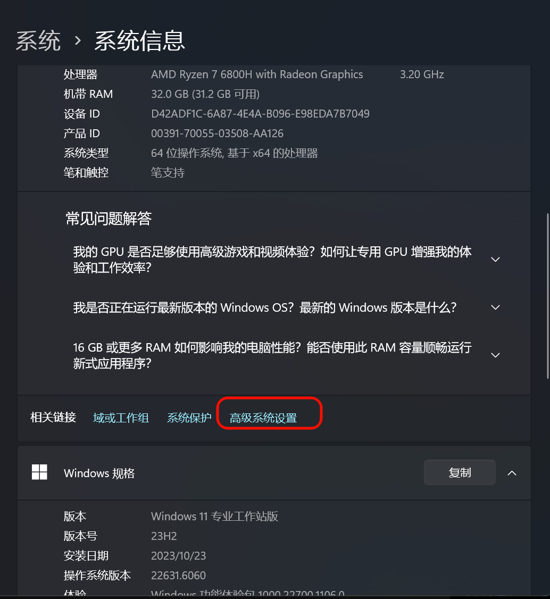
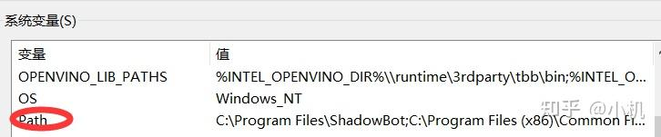
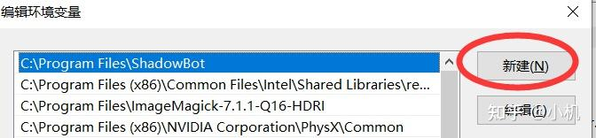
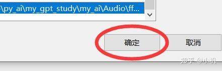
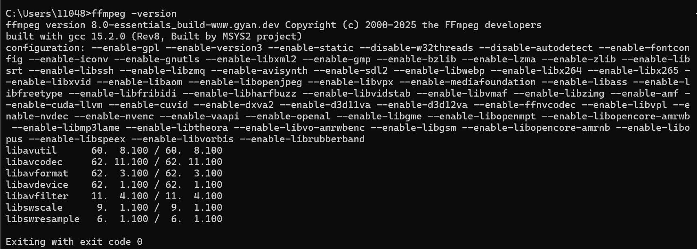

前言
写这个文档主要是最近打算批量录制抖音直播视频，使用的仓库来自 GitHub - ihmily/DouyinLiveRecorder ，在运行的时候发现 ffmpeg 无法通过程序运行正常的安装，只能被迫的手动安装。
文章结构与部分相关图片来自于知乎：如何安装ffmpeg安装教程（windows版），看这篇就够了。
什么是 FFmpeg？
FFmpeg 是一个免费、开源的跨平台项目，由一系列的命令行程序和库组成，用于处理、转换、流式传输、编码和解码各种格式的多媒体数据（包括视频、音频和图像）。
作用
1. 格式转换（Transcoding）
这是 FFmpeg 最常用、最基本的功能。
- 示例： 将 .mov 文件转换成 .mp4，将 .wav 音频转换成 .mp3，或将视频编码格式从 H.264 转换成 HEVC (H.265)。
2. 录制与流媒体处理
- 录制： 可以从各种来源（如摄像头、麦克风、屏幕捕获，或像你遇到的网络直播流）捕获数据并保存为文件。
- 流媒体： 它是许多直播平台（包括推流端和接收端）处理和传输音视频流的核心技术。
3. 基础编辑和处理
- 剪辑/合并： 剪切视频片段、合并多个视频文件。
- 缩放/裁剪： 改变视频的分辨率（例如将 1080p 缩放为 720p）。
- 滤镜/效果： 添加水印、字幕、进行色彩调整等。
- 分离/混流： 将视频文件中的音频和视频轨道分离，或将新的音轨/字幕混入视频文件。
4. 播放器和编解码器基础
许多知名的多媒体播放器和软件（如 VLC Media Player、MPlayer 等）的底层都使用了 FFmpeg 的库（libavcodec、libavformat 等）来进行音视频的解码和编码。
对于 DouyinLiveRecorder 这个直播录制工具来说，ffmpeg 的作用是核心引擎：
- 抓取流数据： 你的程序负责解析直播间的地址，获取原始的音视频流数据。
- 录制和封装： ffmpeg 负责接收这些原始数据流，并将其实时编码、同步，最终封装成你需要的 .mp4 或其他格式的视频文件并保存到硬盘上。
安装与部署步骤
1.官网下载ffmpeg
进入 Download FFmpeg 网址，点击下载 windows 版 ffmpeg（点击左下第一个绿色的行）

在release builds第一个绿框里面选择一个版本下载。

2. 部署
下载完成后，将文件解压到你指定的目录（切记，尽可能不要解压到系统盘，如 C 盘）

解压完成后，进入项目文件，进入到 bin 文件夹，并将文件夹路径复制下来
打开 电脑设置 ，进入到 系统 ，拉到最底下，找到 系统信息 ，点击 高级系统设置。

打开环境变量，在系统变量中找到Path:

双击打开，点击新建：

再把最开始复制的地址黏贴进来，点击确定：

保存完毕后，打开任意shell 输入 ffmpeg -version ，如果正常输出版本号则表示安装成功。
